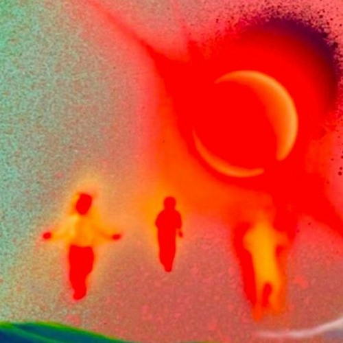
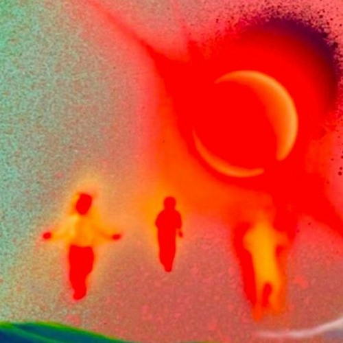
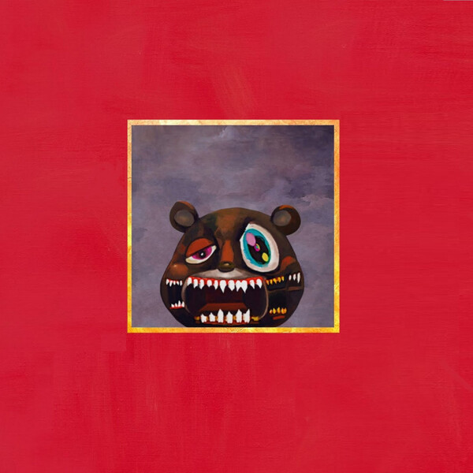
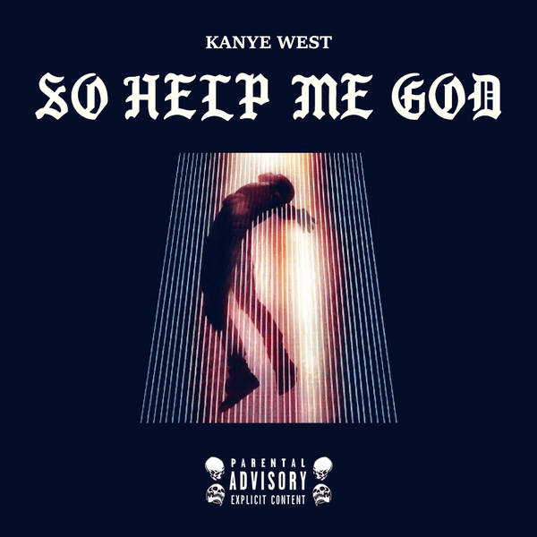
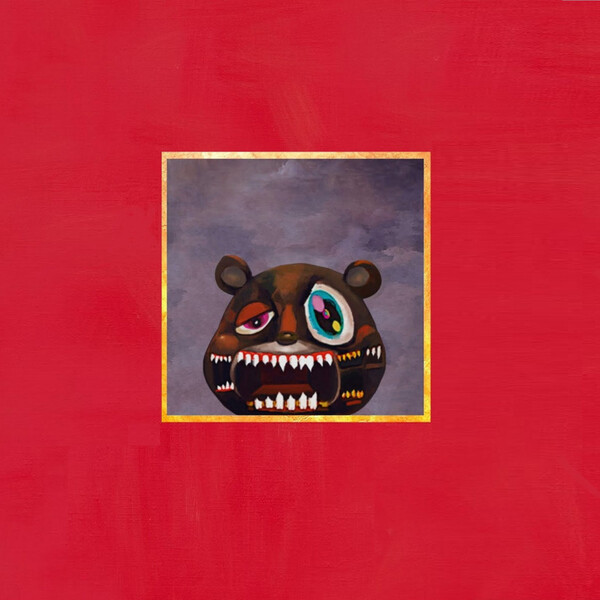
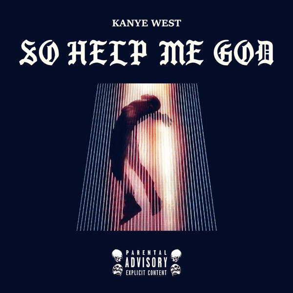

Contexto
Yandhi, el caso de un supuesto 'Album incompleto' del rapero YE, es conocido, amado y sobre todo ESPERADO!!!(Publicalo ya hombre!!) debido a que el propio YE habia dicho que estaba listo para publicar un 29 de Septiembre del 2018, pero ya pasando dos dias decide cancelarlo, debido a que queria ahora cambiar el tema del album por algo mas religioso, haciendo que unos temas fueran reciclados para su nuevo album 'Jesus Is King'.
Detalles
El nombre 'Yandhi' proviene de la mitologia griega, que quiere decir 'Diosa De La Luz' y en mi opinion el album representa esto, Luz, sus canciones dan unas vibras agudas como si un rayo de luz estuviera sobre nosotros dandonos calor y valor.
Es por eso su portada del album, un disco que tiene un efecto de reflejos debido a los rayos de luz, es como si Dios iluminara el album con su poder divino, La bipolaridad de Ye y su acercamiento a Dios hizo que cambiara el concepto de Yandhi, de ser un Dios a quien deben adorar ahora, a 'Dios es uno solo y el es quien salvo mi alma'
 

 


